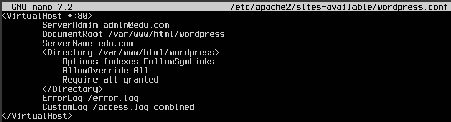

Práctica 2.4 Instalar y configurar Wordpress
PASO 1: Configurar el Servidor 2 (Mysql)
Actualizar el sistema e instalar Mysql.
sudo apt update && sudo apt upgrade -y
Instalar Mysql.
sudo apt install mysql-server
Acceder a Mysql como administrador root.
sudo mysql -u root
Crear la BBDD
CREATE DATABASE wordpress_db;
CREATE USER 'wp_user'@'%' IDENTIFIED BY 'tu_contraseña_segura';
GRANT ALL PRIVILEGES ON wordpress_db.* TO 'wp_user'@'%';
FLUSH PRIVILEGES;
EXIT;

Permitiremos las conexiones remotas
sudo nano /etc/mysql/mysql.conf.d/mysqld.cnf
Buscaremos la línea que contiene bind-address y la cambiaremos de 127.0.0.1 a 0.0.0.0 para permitir conexiones desde cualquier dirección IP.

Reiniciaremos Mysql
sudo systemctl restart mysql
Abriremos el puerto Mysql (3306) en el firewall
sudo ufw allow 3306

De esta forma, con un script descargamos mysql y el servidor queda listo para soportar una instalación de WordPress, con acceso remoto a la BBDD si es necesario.
Puedes ver el script aquí
PASO 2: Instalar Apache, PHP, las extensiones necesarias y descargar e instalar Wordpress
Instalamos Apache que será el servidor web donde se alojará Wordpress.
sudo apt install apache2 -y
Instalamos PHP y las extensiones necesarias.
sudo apt update
sudo apt install apache2 ghostscript libapache2-mod-php
sudo apt install php php-bcmath php-curl php-imagick php-intl
sudo apt install php-json php-mbstring php-mysql php-xml php-zip
Reiniciamos apache para que los cambios surtan efecto.
sudo systemctl restart apache2.service
Descargamos la última versión de WordPress y colocamos en la carpeta web de Apache.
cd /tmp
wget https://wordpress.org/latest.tar.gz
tar -xzf latest.tar.gz
sudo mv wordpress /var/www/html/
Cambiamos la propiedad y permisos de los archivos.
sudo chown -R www-data:www-data /var/www/html/wordpress
sudo chmod -R 755 /var/www/html/wordpress
Configurar WordPress para conectarse a la base de datos.
cd /var/www/html/wordpress
Copiamos el archivo de configuración.
cp wp-config-sample.php wp-config.php
Editamos el archivo de configuración de WordPress.
sudo nano wp-config.php
Cambiamos las siguientes líneas para apuntar al "Servidor 2" (MySQL) en lugar de usar "localhost".
define('DB_NAME', 'wordpress_db'); // Nombre de la base de datos
define('DB_USER', 'wp_user'); // Usuario de la base de datos
define('DB_PASSWORD', 'tu_contraseña_segura'); // Contraseña del usuario
define('DB_HOST', 'IP_DEL_SERVIDOR_2'); // La IP del Servidor 2 (donde está MySQL)

Configuramos Apache para WordPress creando un archivo de configuración para el sitio de WordPress en Apache.
sudo nano /etc/apache2/sites-available/wordpress.conf
Agregamos lo siguiente:
<VirtualHost *:80>
DocumentRoot /srv/www/wordpress
<Directory /srv/www/wordpress>
Options FollowSymLinks
AllowOverride Limit Options FileInfo
DirectoryIndex index.php
Require all granted
</Directory>
<Directory /srv/www/wordpress/wp-content>
Options FollowSymLinks
Require all granted
</Directory>
</VirtualHost>

Luego habilitamos el nuevo sitio de WordPress y el módulo de reescritura de Apache:
sudo a2ensite wordpress.conf
sudo a2enmod rewrite
Deshabilitamos el sitio predeterminado “It Works” con:
sudo a2dissite 000-default
Reiniciamos Apache para aplicar los cambios:
sudo systemctl restart apache2
Paso 3: Finalizamos la instalación de WordPress
Abrimos el navegador: Nos dirigimos a la dirección IP del "Servidor 1" en un navegador (http://IP_DEL_SERVIDOR_1)


 De esta forma con un script:
De esta forma con un script:
- Automatizamos la instalación de Apache, PHP y WordPress.
- Configuramos una arquitectura distribuida con la base de datos en un servidor separado, mejorando rendimiento y seguridad.
- Optimizamos los recursos al permitir un mejor uso de la CPU y memoria en cada servidor.
** Puedes ver el script aquí